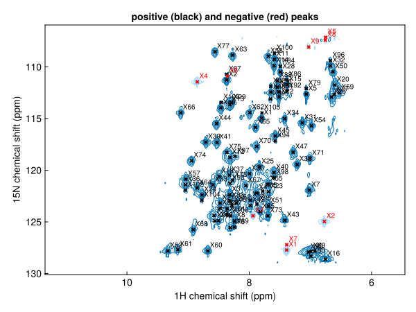
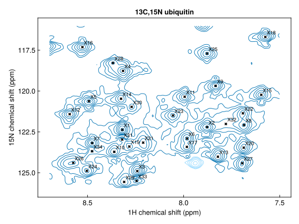

Detect peaks
detectpeaks finds the peaks in a 1D, 2D or higher-dimensional spectrum and returns them as a Vector{Peak{N}}, strongest first. For an introduction, see the tutorial Peaks and peak lists.
using NMRTools, CairoMakie
spec = exampledata("2D_HN")Thresholds
A peak is a local maximum whose height exceeds a threshold, by default ten times the noise level (spec[:noise]). Set the threshold relative to the noise with snr, or absolutely with threshold:
length(detectpeaks(spec)), length(detectpeaks(spec; snr=30))(115, 82)detectpeaks(spec; threshold=1e6) # an absolute thresholdPositive and negative peaks
By default both positive and negative peaks are found. Select one sign with sign:
pos = detectpeaks(spec; sign=:positive)
neg = detectpeaks(spec; sign=:negative)
length(pos), length(neg)(106, 9)fig, ax, _ = nmrplot(spec; title="positive (black) and negative (red) peaks")
nmrplot!(ax, pos)
nmrplot!(ax, neg; color=:red)
A region of the spectrum
Select a region before picking:
amides = detectpeaks(spec[7.5 .. 8.7, 116 .. 126]; sign=:positive)
fig, ax, _ = nmrplot(spec[7.5 .. 8.7, 116 .. 126])
nmrplot!(ax, amides)
or filter the list afterwards by position:
filter(p -> 7.5 < ppm(p, 1) < 8.7, pks)1D and 3D spectra
The same function works in any number of dimensions:
detectpeaks(exampledata("1D_19F"))1-element Vector{Peak{1}}:
label x (ppm) lwx (Hz) intensity
X1 -123.698 29.9096 18494.4hnca = detectpeaks(exampledata("3D_HNCA"); snr=20, sign=:positive)
hnca[1:3]3-element Vector{Peak{3}}:
label x (ppm) y (ppm) z (ppm) lwx (Hz) lwy (Hz) lwz (Hz) intensity
X1 7.87406 115.062 43.3111 17.807 23.7113 17.3191 2.19147e6
X2 7.75171 109.212 42.6555 21.1198 24.9982 22.7863 891022.0
X3 7.61934 109.089 58.5038 19.6625 44.6236 17.2876 789423.0For a pseudo-2D series, pick peaks in one plane: detectpeaks(spec[:, 1]).
A single peak
findpeak finds the maximum nearest a given position, refined by interpolation, and labels it:
findpeak(spec, (8.27, 121.0); label="A28")Peak{2} A28
position (ppm): 8.27052, 120.968
linewidth (Hz): 26.302, 36.7464
intensity: 15999.2findnearest gives the index of the peak in a list nearest a position. scale weights the dimensions, since a ppm in ¹⁵N is not a ppm in ¹H:
i = findnearest(pos, (8.27, 121.0); scale=(1, 0.2))
pos[i]Peak{2} X78
position (ppm): 8.27052, 120.968
linewidth (Hz): 26.302, 36.7464
intensity: 15999.2Filtering by properties
A peak list is a vector, so filter and sort with the accessors intensity, linewidth, ppm and label select peaks:
strong = filter(p -> intensity(p) > 50 * spec[:noise], pos)
narrow = filter(p -> linewidth(p, 1) < 30, pos)
length(strong), length(narrow)(64, 90)In a pipeline
pks = loadfid("hsqc/1") |> autoprocess |> realest |> detectpeaks(snr=20)